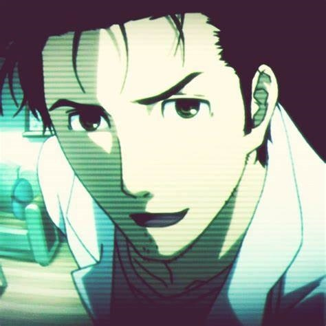
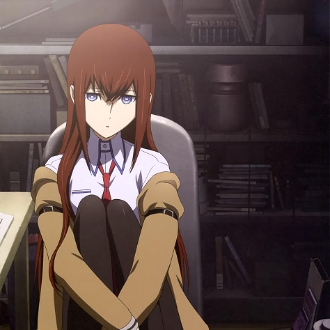

cet anime est un anime traitent de voyage temporel, un homme nommé Rintaro Okabe qui se fait
appeler "le savant fou Hououin Kyouma" créé une machine temporelle sans faire exprès à l'aide
des membres de son labo mais découvre que dans le futur, le SERN controle le monde grace a
cette vameuse machine temporelle...
cet anime comporte 2 saisons, 2 épisode alternatif de transition et 2 film inci que quleques épisodes bonus.
le site du producteur est un site japonais alors, j'ai trouvé ce site
l'opening de l'anime :

Rintaro Okabe

Rintaro Okabe alias Hououin Kyouma, 18 ans est un savant fou comme il veut se faire appeler qui a créé un petit labo nommé le labo des gadgets futuristes, a Akhiabara, a Tokyo. Plus jeune, il est devenu amis avec la jeune mayuri qui avais perdu sa grand mère récemment. Il c'est lié d'amitié avec daru lors de sa scolarité et a rencontré makise lors d'une conférence.
Makise Kurisu

Kurisu Makise est une jeune neurophycisienne de 19 ans qui, lors d'un séminaire est assasiné mais bizzarement, qelques minutes apres l'incident , elle revien a la vie comme si rien de tout ca n'etait arriver. elle rencontre okabe lors d'une conférence sur les voyages temporels et rejoin son labo des gadgets futuristes quand elle vois qu'ils ont créé une machine temporelle par hazard.
Shiina Mayuri
Kurisu Makise est une jeune neurophycisienne de 19 ans qui, lors d'un séminaire est assasiné mais bizzarement, qelques minutes apres l'incident , elle revien a la vie comme si rien de tout ca n'etait arriver. elle rencontre okabe lors d'une conférence sur les voyages temporels et rejoin son labo des gadgets futuristes quand elle vois qu'ils ont créé une machine temporelle par hazrd.